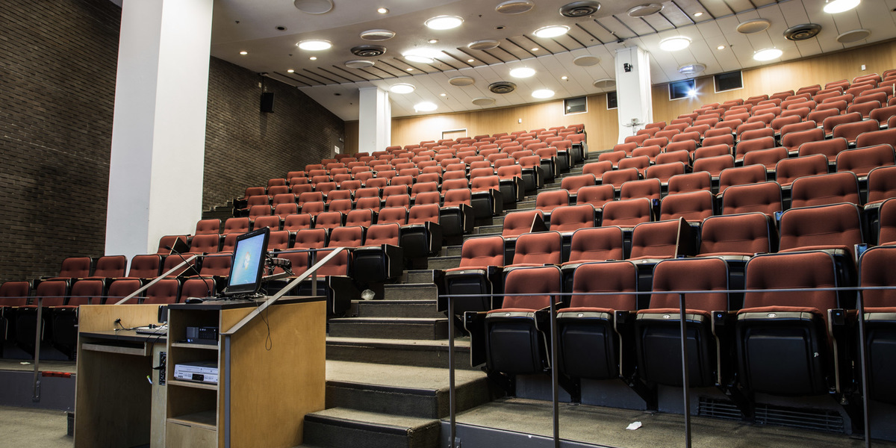

U1

Want to stay in the loop? Subscribe to our U1 newsletter and join the U1 Facebook group!
U1 Year
Welcome to your introductory year in Physiology!There are 4 mandatory U1 core Physiology courses, listed in the table below. This table includes 'pros' and 'cons' for each course, representing opinions of PHGY undergraduates submitted to PULS via survey. These views are not necessarily those expressed by the Department of Physiology, the Faculty of Science, or McGill University.
PULS U1 Representatives: TBD
Contact the PULS U1 Reps for questions regarding PHGY 210 NTCs, PHGY 209 and 210 course packs, and U1 PHGY events!
Summary of U1 PHGY Courses
| Course | McGill Website | Pros | Cons | Evaluation |
|---|---|---|---|---|
| PHGY 209: Mammalian Physiology 1 Fall 2018 Syllabus |
PHGY 209 |
|
|
|
| PHGY 210: Mammalian Physiology 2 Winter 2019 Syllabus |
PHGY 210 |
|
|
|
| PHGY 212: Introductory Physiology Lab 1 Fall 2018 Syllabus |
PHGY 212 |
|
|
|
| PHGY 213: Introductory Physiology Lab 2 Winter 2019 Syllabus |
PHGY 213 |
|
|
|
Note: It is possible, but not recommended to take PHGY 210 before PHGY 209. Many concepts in PHGY 210 build upon concepts learned in PHGY 209. Furthermore, taking PHGY 209 in the Fall semester of your U2 year will significantly alter your course progression for the rest of your undergraduate degree (being that it is a prerequisite for all 300-level PHGY courses).